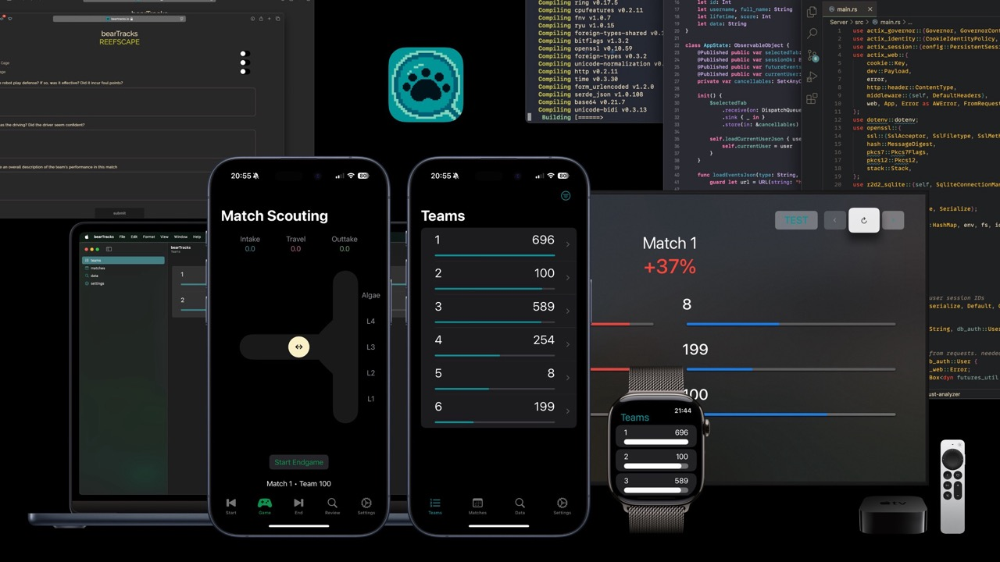
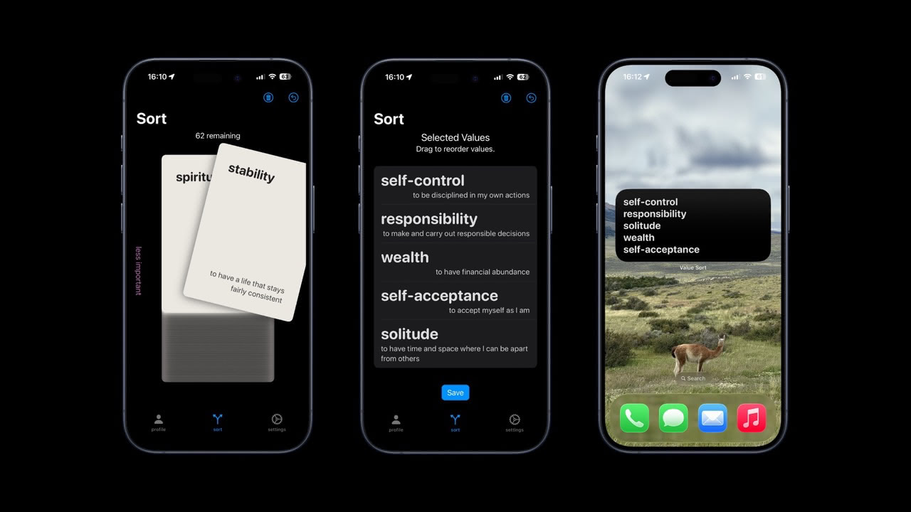
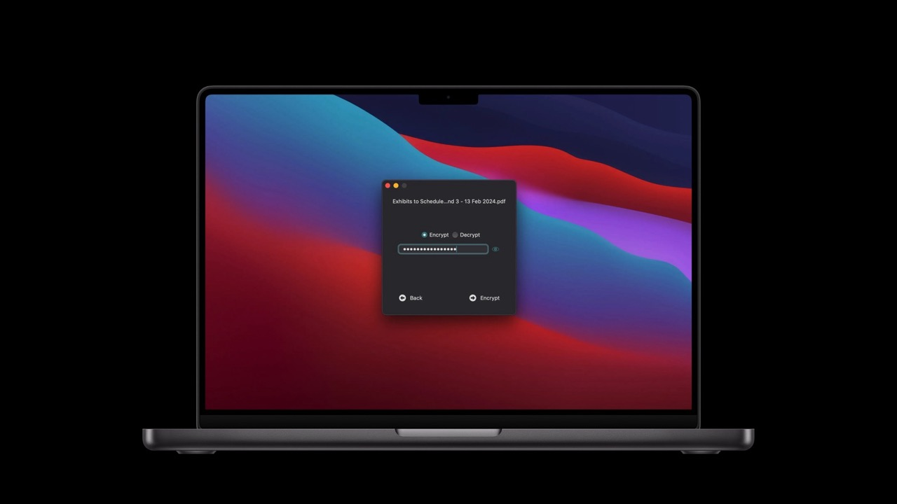
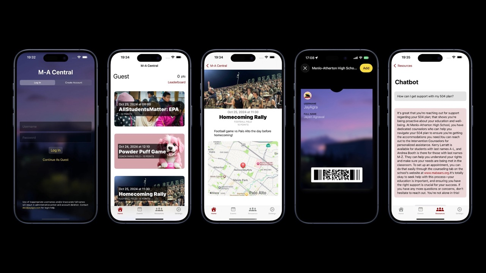
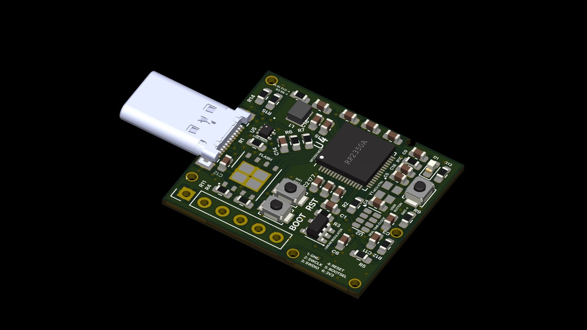
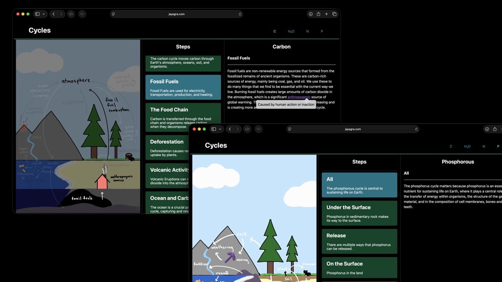
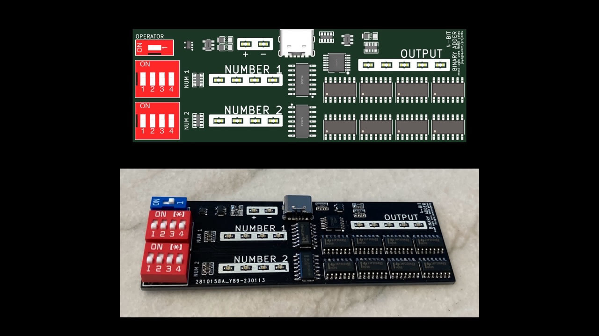
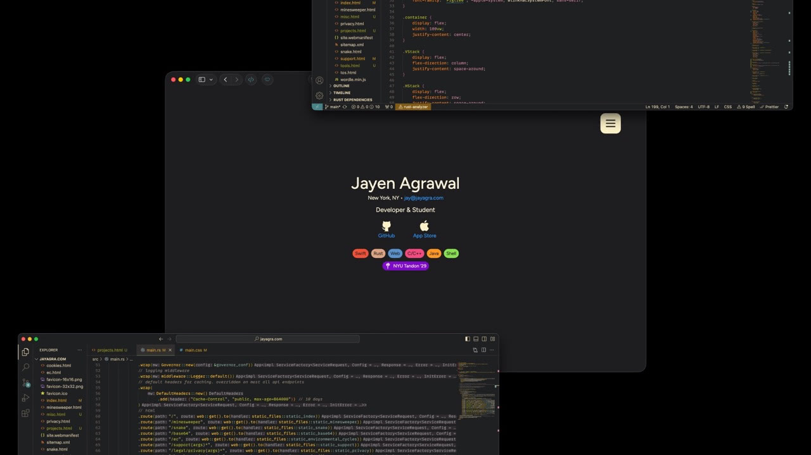
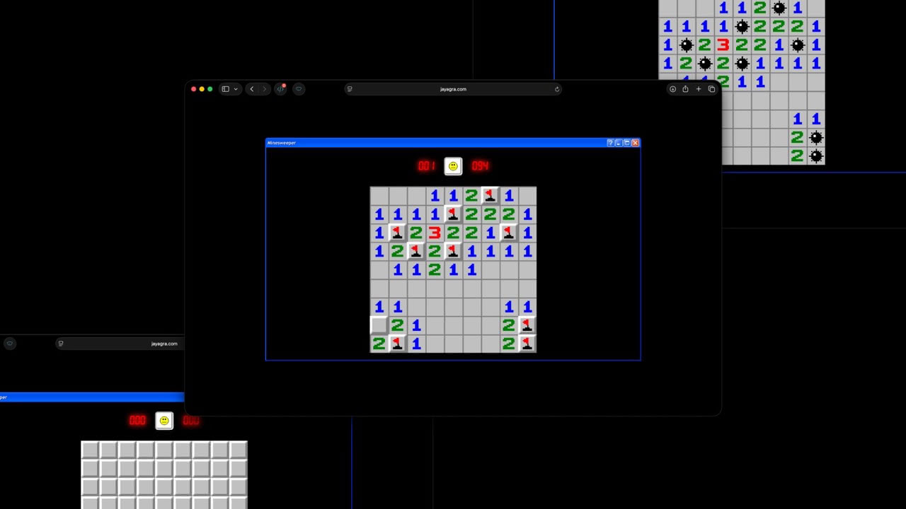

Projects
bearTracks

A scouting application for FIRST Robotics Competition, iOS, macOS, tvOS, watchOS, visionOS (Swift), and web (TS + WebAssembly + CSS + HTML) front ends, with a Rust backend. Natively supports passkeys, push notifications, and other modern features. Thousands of users & millions of data points collected. Enables data sharing across teams, generates accurate match predictions, and functions globally. Incorporates a point system to increase user engagement.
Personal Values Sort

iOS application to help users determine & remember their values. Written in Swift, including widget support built natively with WidgetKit. Completely offline to enhance user privacy, data is saved locally using SwiftData. Over 3,000 users since launch. Built for Village Coaches [↗].
Turbid

Simple and private password-based macOS file encryption application. Securely encrypts and decrypts files to DoD standards, without connecting to the internet. Uses Apple's CryptoKit AES GCM module to handle cryptographic processing. On supported devices, hardware-based encryption is used.
M-A Central

Event organizer for Menlo-Atherton High School [↗]. Enabled users to see events, earn points, and compete with each other. Generated PassKit student IDs and contained a custom PassKit event ticketing system. PassKit generation was handled without an external service.
Minimal RP2350 Board

Fully functional RP2350 board, supporting USB (incl. passive USB-C negotiation). Provides a UI button and exposes serial wire debug (SWD) pins on a 2.54mm header. Intended to be mounted into a small plastic case and plugged in like a USB drive. Regulator and crystal circuits are to the Raspberry Pi Foundation's specifications.
Environmental Cycles

Interactive webpage created for AP Environmental Science course intended to help visualize 4 cycles. Uses JS, CSS, and HTML. Made in collaboration with Mira Tian (art), Leviathan Padwick (art), and Milo Kroh (written descriptions). Made without any JS or CSS libraries.
NAND Adder

4-bit addition and subtraction machine using CMOS NAND gates to perform arithmetic and a set of four XOR gates to set the mode. Uses surface-mount logic gate chips, through-hole DIP package switches for binary inputs, and 0603 package red LEDs for indication. USB-C port has two 5.1kΩ pull-down resistors on the CC lines to support passive negotiation.
jayagra.com

All pages other than those linked on the tools or miscellaneous pages are made entirely without JavaScript, and use CSS to control menus and navigation. The pages are served by a Rust server written with actix. Traffic is routed through Cloudflare for caching and security, then Caddy routes traffic to a local port on the server.
Browser Minesweeper

Minesweeper written in JavaScript without a game engine or the HTML canvas. Theoretically capable of being run on early versions of Internet Explorer. Uses XP.css [↗] for the Windows XP style. Game tiles are arranged in a CSS grid (where supported), and game logic is run on user interaction with any element.